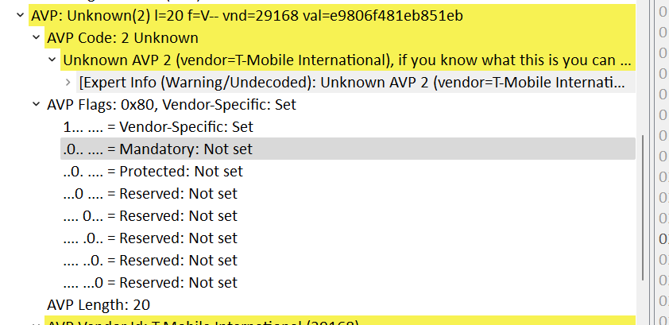

CSFB Call Flow Failure Analysis
Product: SVI_GMSC | Author: Awash Maskey



Case Overview
This case focuses on analyzing two different call scenarios observed on SVI_GMSC. The first call is a 4G CSFB (Circuit Switched Fall Back) call that fails, while the second call is a 3G call that completes successfully.
The objective was to determine whether the failure was related to signaling flow differences, normalization issues, or version-specific behavior, without requiring a full GMSC model. Instead, an SBC-based lab model was used for replication and analysis.
Call Scenarios Observed
- 4G (CSFB) – Call failing
- 3G – Call successful
Initial investigation indicated that SBC analysis was sufficient, and a full GMSC setup was not required for root cause identification.
Software Versions Involved
svi-voip.v17_5_14.el7.x86_64– Observed CSFB failuresvi-voip.v17_11_4.el7.x86_64– Latest version for validation
Trace and Log Analysis
The customer provided PCAP traces and logs for investigation. The primary trace used for analysis was:
-
ukl6-gmsc-01_20230302_Onnetcall.pcap
Using Wireshark, SIP signaling flows were compared between the failing 4G CSFB call and the successful 3G call to determine whether the flows were identical or deviated at any stage.
Any non-identical flow behavior was documented and raised for engineering review.
Lab Replication Strategy
To replicate the issue, an SBC lab model was built using the same software versions tested by the customer. The model was created as a lightweight SBC reference setup, focusing only on package installation rather than full GUI and licensing configuration.
SIP traffic replication was performed using SIPp, generated from customer-provided PCAP files.
sniff2sipp and SIPp Testing
The following steps were executed:
- Install sniff2sipp on the SBC lab model
- Generate SIPp scenarios directly from the PCAP files
- Execute the generated scenarios on a dedicated SIPp test machine
During the installation and usage of sniff2sipp, an error was encountered, which required deeper inspection of the SIP signaling content.
Root Cause Identification
Detailed Wireshark analysis revealed that certain AVPs were marked as unknown, resulting in SIP headers being interpreted as anonymous calls.
This behavior caused critical values to be unresolved and displayed as
00000, ultimately impacting CSFB call processing.
Resolution and Fix
To address the issue, a lab environment was built to test normalization behavior. The normalization regex values were modified to correctly resolve the affected AVPs.
After applying the updated normalization rules:
- Anonymous call resolution was corrected
- AVP values were properly parsed
- CSFB call flow completed successfully
Recommendations for Production
- Apply the updated normalization regex values in production
- Validate changes on
svi-voip.v17_11_4.el7.x86_64 - Perform SIPp regression testing before rollout
- Engage Engineering for review and sign-off
Conclusion
This case demonstrates the importance of detailed SIP trace analysis, lab replication, and normalization validation when troubleshooting CSFB call flow failures. Using an SBC-based model with sniff2sipp and SIPp proved effective in identifying and resolving the issue before production deployment.
← Back to Home